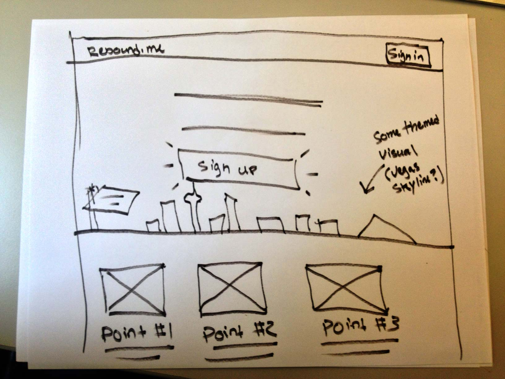
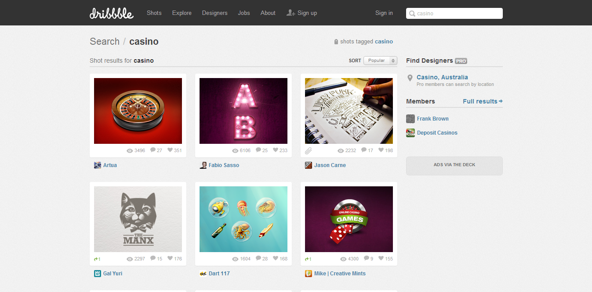
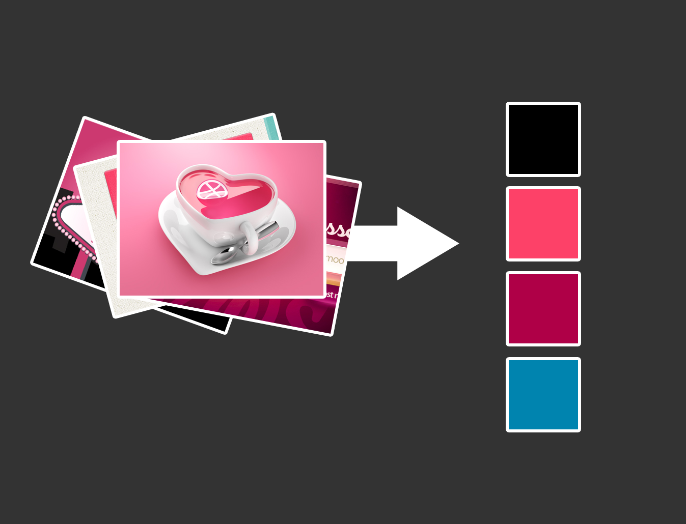
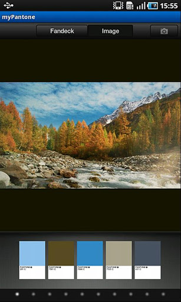
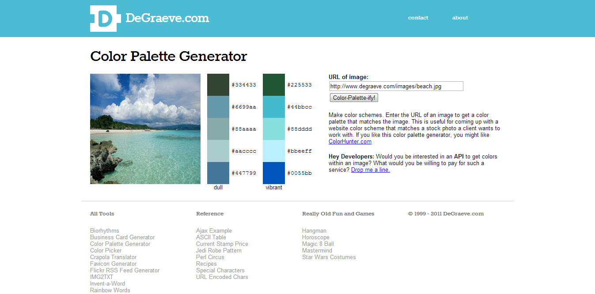
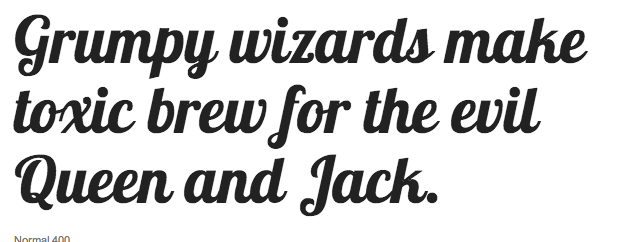
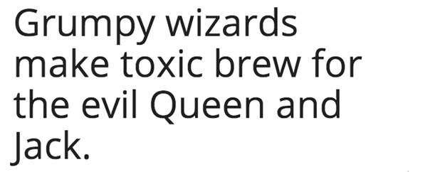
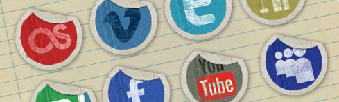
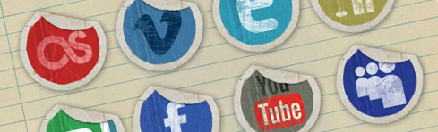
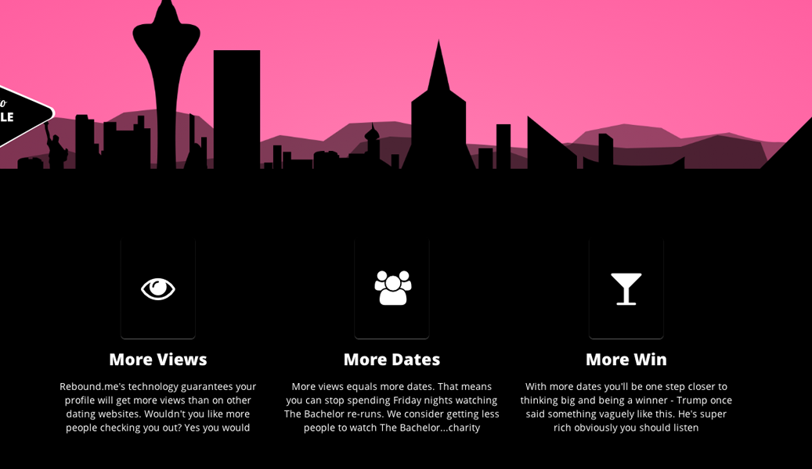

Beyond Bootstrap
@jasondwilkens
@josh_carver
#html5devconf
Who is this talk for?
Meet Tony
(We work with him)

Tony has BIG ideas
Hey Josh, I got a billion dollar idea $$$
Picture this...
This is going to be legendary...
Online dating is cool, but..
Picture this...

Someone visits your online dating profile

Later they go to Amazon
BOOM!
There is a suh-wheet display-ad of you at the beach
- More page views
- More messages
- More dates
- #win
I'll call it rebound.me
Don't lie, you'd pay for that shit
rebound.me needs a website
But Tony is not a designer
Dun-da-da-dun! Bootstrap
<link href="css/bootstrap.min.css" rel="stylesheet" media="screen">
Sleek, intuitive, and powerful front-end framework for faster and easier web development.
By @mdo & @fat

That's a negative Ghost Rider

Oh hai clone army
Better than nothing but
- Extremely Bland
- Lowers trust
- We can do better
Bootstrap is a framework not a solution
It's there to make design easier, not do it for you
"SEE, SOME PEOPLE KNOW WHAT THEY ARE DOING"
-@html5douche


Clear Goals

ThinSlices

MailerLoop
How do I do that?
- Contrast
- Color
- Size
So, what do we need?
- Rad layout
- Bodacious color scheme
- Tubular typography
- Righteous style
- Gnarly custom components
Layout
Step 1 - Sketching

Tony's sketch
Making Bootstrap Mockups
Layout
Step 2 - Coding time!
Can't we just use the Customize Bootstrap page?
Yes, but that isn't enough
Don't use the "download" Bootstrap option
Just clone/fork the git repo
- Can make changes directly
- Variables / mixins with LESS
- This is what we do at Bizo
Suggested Setup
Makes merging updates from bootstrap really easy
- branch: master (pristine bootstrap)
- branch: your-changes
We wanted changes to be easily seen
So this talk's code is a bit special
We just override the styles
<!-- Example Project's index.html -->
<!-- Standard Boostrap -->
<link href="css/bootstrap.min.css" rel="stylesheet">
<!-- Overrides -->
<link rel="stylesheet/less" type="text/css" href="less/theme.less" />
Done for clarifying differences from vanilla Bootstrap
Not the preferred way
Fixed width is so 90's
Fluid Baby!
<!-- index.html -->
<div class="navbar">
<div class="navbar-inner container-fluid">...</div>
</div>
<div class="hero-unit">
<div class="container-fluid">...</div>
</div>
<div class="container-fluid">
<div class="row-fluid">
<div class="span4"></div>
<div class="span4"></div>
<div class="span4"></div>
</div>
</div>
100% width + Big screen
Crappy for reading
.container-fluid {
margin: 0 auto;
max-width: 1000px;
}
Yup it's mostly that easy
Now we can scale up/down
Not quite responsive, but close enough for our talk
Progress
Rad layout- Bodacious color scheme
- Tubular typography
- Righteous style
- Gnarly custom components
Next: Choose a style
- Minimalism
- Retro
- Photographic
- Textured
- On and on...
Tony's style: Las Vegas baby!

Tony's Moodboard

siteInspire

Dribbble
Colors
Tony's choice: Refer to your moodboard


My Pantone App

Color Scheme Designer

Color Palette Generator
// Color scheme
@black: #000;
@fuschia: #af0047;
@lightFuschia: lighten(#af0047, 30%);
@teal: #0084af;
@primary: @black;
@secondary: @lightFuschia;
@tertiary: @fuschia;
@quaternary: @teal;
Progress
Rad layoutBodacious color scheme- Tubular typography
- Righteous style
- Gnarly custom components

Google Web Fonts

Adobe Web Fonts

Typekit

H1's & logo: Lobster

Rest: Open sans
Integration
<!-- typography -->
<link href='http://fonts.googleapis.com/css?family=Lobster' />
<link href='http://fonts.googleapis.com/css?family=Open+Sans:400,800' /'>
@h1-size: 60px;
body {
font-family: 'Open Sans', sans-serif;
}
h1 {
font-family: "Lobster", cursive;
text-shadow: 3px 4px rgba(0, 0, 0, 0.5);
font-size: @h1-size;
}
h2 {
font-size: @h1-size / 2;
font-weight: normal;
}
Progress
Rad layoutBodacious color schemeTubular typography- Righteous style
- Gnarly custom components
Remember our idea for a skyline?
Let's decorate
Sure, when do you need it by?
-Tony
Best option
Do it yourself
- Pick up an SLR...
- Draw something...
- Get help from a friend...
Eschew Fads
 

Remember these?
<div class="hero-unit">
<img class="background" src="img/city.png" />
<div class="container-fluid">
<h1>Stop being lonely</h1>
<h2>Get more dates & advertise yourself</h2>
<a href="#" class="btn btn-primary btn-jumbo">Get started </a>
</div>
</div>
.hero-unit {
height: 450px;
overflow: hidden;
position: relative;
background: @secondary;
img.background {
position: absolute;
display: block;
bottom: 0px;
z-index: 0;
}
}
Progress
Rad layoutBodacious color schemeTubular typographyRighteous style- Gnarly custom components

Content section is boring
Custom Components
Filling in the gaps
Vegas == Casinos
Lets do something card themed
<div class="card">
<i class="icon-glass"></i>
</div>
.card {
height: 140px;
width: 100px;
background: url("../img/pattern.png") @tertiary;
position: relative;
border-radius: 6px;
....
}
Extra Style
With CSS3 Animations
Let's make the city fade in while sliding up
<div class="hero-unit">
<img class="background animated fade-in-up delayed-025s" src="img/city.png" />
...
</div>
Caveat: Vendor Prefixes Omitted
@keyframes fade-in-up {
from { opacity: 0; transform: translate(0, 50px); }
to { opacity: 1; transform: translate(0, 0); }
}
.animated {
animation-duration: 1s;
animation-fill-mode: both;
}
.fade-in-up {
animation-name: fade-in-up;
}
.delayed-xxx {
animation-delay: XXXs;
}
/* for example */
.delayed-025s {
animation-delay: 0.25s;
}
/* repeat ... */
Neat, but can go further
Let's make the sign and luxor light up
<!-- inside hero unit -->
<div id="sign-container">
<img id="sign" class="animated fade-in-up delayed-025s" src="img/sign.png" />
<span class="title1 animated fade-in delayed-2-05s">Welcome to</span>
<span class="title2 animated blink delayed-3s">Date Ville</span>
<span class="title3 animated fade-in delayed-2-05s">pop: you</span>
<div>
<!-- inside hero unit -->
<div id="luxor-container">
<img id="luxor" class="animated fade-in-up delayed-025s" src="img/luxor.png" />
<img id="luxor-light" class="animated blink delayed-2s" src="img/luxor-light.png" />
<div>
Positioning the Luxor & Sign
#sign-container {
display: block;
position: absolute;
left: 0;
bottom: 0;
}
#luxor-container {
display: block;
position: absolute;
bottom: 0;
right: 0;
}
Positioning Cont
#luxor {
position: absolute;
bottom: 0;
right: 0;
}
#luxor-light {
position: absolute;
bottom: 82px; /* height of luxor image */
right: 176px / 2 - 10px; /* center the light on luxor */
}
Last Bit: The Blink
@keyframes blink {
0%, 15%, 25% {
opacity: 0;
}
10%, 20%, 100% {
opacity: 1;
}
}
What we got!
- Rad layout
- Bodacious color scheme
- Tubular typography
- Righteous style
- Gnarly custom components
"Sounds like a lot of work..."
For those feeling lazy:
Question Time
Thanks and Good Luck!
github.com/jcarver989/html5-talk
@jasondwilkens
@josh_carver
#html5devconf